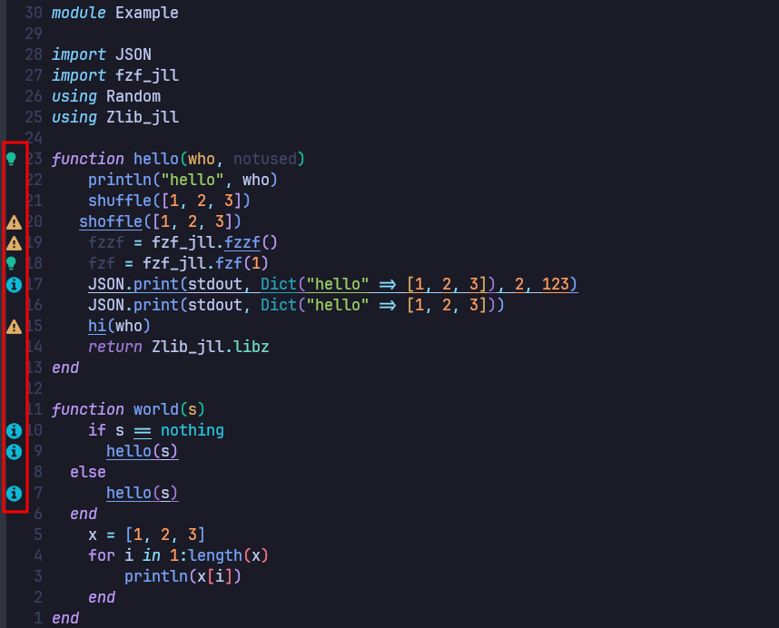
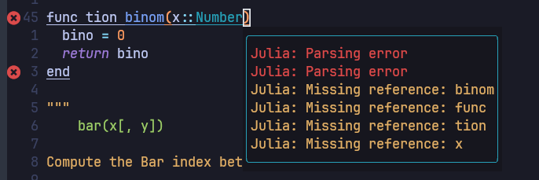
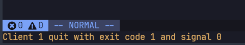

Setup Julia Repo in GitHub with Actions
Install Julia
Basically if you are using Linux or Mac, you can easily install Julia by the package manager. For Gentoo, we can install it with portage as following.
$ sudo emerge -av julia
The problem to install Julia by Gentoo package manager is slow upgrade speed. In this time, July 27 2023, latest stable version version of Julia in the official site is 1.9.2 but Gentoo still has 1.8.5 as the latest one. To overcome this gap, according to the instruction in Julia GitHub we can easily install it by compiling source.
$ cd localgit <-- local git directory
$ git clone https://github.com/JuliaLang/julia.git
$ cd julia
$ git checkout v1.9.2 <-- tag for latest version
$ make
$ ln -s julia ~/.local/bin/julia <-- This should be earlier path than /usr/bin/juliaSetup Julia language server with formatter for Neovim
This setup is based on cloned Neovim-from-scratch and Github repo: evoagile_configs repo.
To setup LSP(Language Server Protocol) with julials.lua file in Neovim-from-scratch, we need to setup nvim-lspconfig environment first. Using stow tool, we can copy Makefile to ~/.julia/environments/nvim-lspconfig/.
$ cd localgit/evoagile_configs <-- if your local cloned repo is in localgit
$ stow -t ~ julia
$ cd ~/.julia/environments/nvim-lspconfig/
$ makeAfter make command, neovim is launched and open Example.jl source file with some errors. If you wait a moment and no problem occur to install, you can find some bullets as following screenshot.

Then just quit neovim and continue and finish installation. To test installation, open any example Julia file and change keyword function to func tion and at the same line, input gl. If you have some bullets and messages as following, your installation is successful. 
If you have any error to load Julia LSP, you can find following errror message in neovim. 
As you can find in the following, LanguageServer package depends on JuliaFormatter, StaticLint, and SymbolServer. That means we do not have to install JuliaFormatter separately.
using Pkg
Pkg.add("LanguageServer") Resolving package versions...
Installed Glob ────────────── v1.3.1
Installed TestItemDetection ─ v0.2.0
Installed SymbolServer ────── v7.2.1
Installed Tokenize ────────── v0.5.25
Installed LanguageServer ──── v4.4.0
Installed StaticLint ──────── v8.1.0
Installed JSONRPC ─────────── v1.3.6
Installed CommonMark ──────── v0.8.12
Installed JuliaFormatter ──── v1.0.34
Installed CSTParser ───────── v3.3.6
Updating `~/work/julia_repo_setup.jl/julia_repo_setup.jl/docs/Project.toml`
[2b0e0bc5] + LanguageServer v4.4.0
Updating `~/work/julia_repo_setup.jl/julia_repo_setup.jl/docs/Manifest.toml`
[00ebfdb7] + CSTParser v3.3.6
[a80b9123] + CommonMark v0.8.12
[c27321d9] + Glob v1.3.1
[b9b8584e] + JSONRPC v1.3.6
[98e50ef6] + JuliaFormatter v1.0.34
[2b0e0bc5] + LanguageServer v4.4.0
[b3cc710f] + StaticLint v8.1.0
[cf896787] + SymbolServer v7.2.1
[76b0de8b] + TestItemDetection v0.2.0
[0796e94c] + Tokenize v0.5.25
Precompiling project...
✓ Glob
✓ JSONRPC
✓ Tokenize
✓ SymbolServer
✓ CommonMark
✓ CSTParser
✓ TestItemDetection
✓ StaticLint
✓ JuliaFormatter
✓ LanguageServer
10 dependencies successfully precompiled in 67 seconds. 224 already precompiled.To format your code, you can find related commends in keymaps.lua file. Type :Format in command or <space key>f(when <localleader> = <space key>) in normal mode, whole code in the file will be formatted.
To get supported to Julia formatting, we can also try to use JuliaFormatter.vim. This only supports formatting and no other LSP function but range format supporting in visual mode and definition of format option in configuration file are possible. This uses JuliaFormatter independently. However, I found that when we use Julia LSP with this package, LSP was crashed occasionally. So I decided to uninstall it.
To define format parameters in Julia code is not easy in LSP configuration file. The solution is use '.JuliaFormatter.toml' file in every repo. So it can be convenient to add this file to PkgTemplates. (See below section)
Use PkgTemplates to generate repository
PkgTemplates simplifies the process of setting up the initial file structure for a new repository, specifically CI integration with GitHub actions. To use PkgTemplates, we recommend to install it in system default Julia environment, for example, v1.9 as following.
using Pkg
Pkg.activate()
Pkg.add("PkgTemplates") Activating project at `~/.julia/environments/v1.9`
Resolving package versions...
Installed UnPack ─────── v1.0.2
Installed Mustache ───── v1.0.17
Installed Parameters ─── v0.12.3
Installed PkgTemplates ─ v0.7.38
Updating `~/.julia/environments/v1.9/Project.toml`
[14b8a8f1] + PkgTemplates v0.7.38
Updating `~/.julia/environments/v1.9/Manifest.toml`
[34da2185] + Compat v4.8.0
[9a962f9c] + DataAPI v1.15.0
[e2d170a0] + DataValueInterfaces v1.0.0
[e2ba6199] + ExprTools v0.1.10
[82899510] + IteratorInterfaceExtensions v1.0.0
[78c3b35d] + Mocking v0.7.7
[ffc61752] + Mustache v1.0.17
[bac558e1] + OrderedCollections v1.6.2
[d96e819e] + Parameters v0.12.3
[14b8a8f1] + PkgTemplates v0.7.38
[3783bdb8] + TableTraits v1.0.1
[bd369af6] + Tables v1.10.1
[3a884ed6] + UnPack v1.0.2
[0dad84c5] + ArgTools v1.1.1
[56f22d72] + Artifacts
[2a0f44e3] + Base64
[ade2ca70] + Dates
[f43a241f] + Downloads v1.6.0
[7b1f6079] + FileWatching
[b77e0a4c] + InteractiveUtils
[b27032c2] + LibCURL v0.6.3
[76f85450] + LibGit2
[8f399da3] + Libdl
[37e2e46d] + LinearAlgebra
[56ddb016] + Logging
[d6f4376e] + Markdown
[ca575930] + NetworkOptions v1.2.0
[44cfe95a] + Pkg v1.9.2
[de0858da] + Printf
[3fa0cd96] + REPL
[9a3f8284] + Random
[ea8e919c] + SHA v0.7.0
[9e88b42a] + Serialization
[6462fe0b] + Sockets
[fa267f1f] + TOML v1.0.3
[a4e569a6] + Tar v1.10.0
[8dfed614] + Test
[cf7118a7] + UUIDs
[4ec0a83e] + Unicode
[e66e0078] + CompilerSupportLibraries_jll v1.0.5+0
[deac9b47] + LibCURL_jll v7.84.0+0
[29816b5a] + LibSSH2_jll v1.10.2+0
[c8ffd9c3] + MbedTLS_jll v2.28.2+0
[14a3606d] + MozillaCACerts_jll v2022.10.11
[4536629a] + OpenBLAS_jll v0.3.21+4
[83775a58] + Zlib_jll v1.2.13+0
[8e850b90] + libblastrampoline_jll v5.8.0+0
[8e850ede] + nghttp2_jll v1.48.0+0
[3f19e933] + p7zip_jll v17.4.0+0
Precompiling project...
✓ UnPack
✓ Mustache
✓ Parameters
✓ PkgTemplates
4 dependencies successfully precompiled in 4 seconds. 14 already precompiled.After installing it, we need to setup the template. It would be convenient to keep it in the startup.jl file for easy reuse. Because this file runs at every starting time for Julia, we can use generate function as following example.
julia> genGithubRepo("ecoinfo", "JuliaStudy.jl")